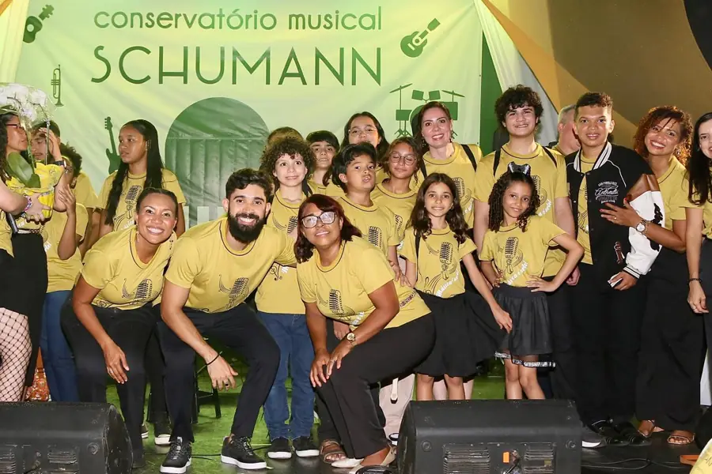
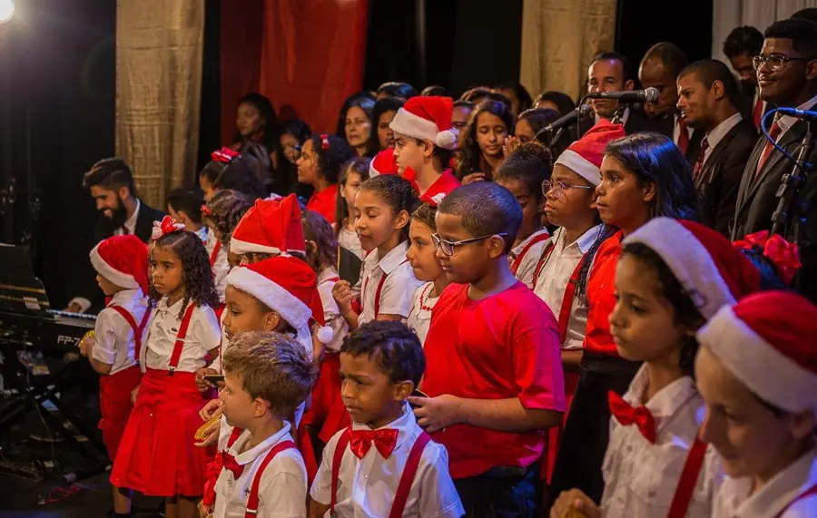
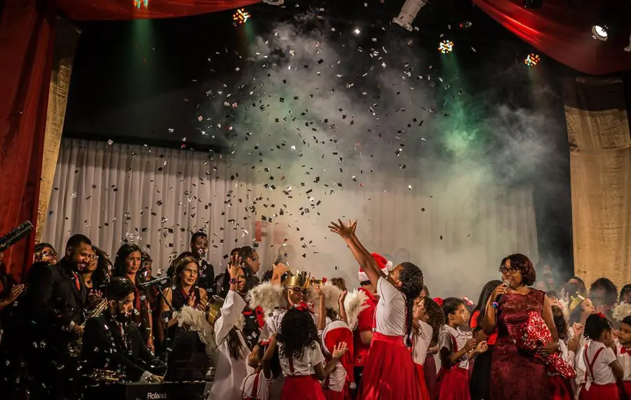
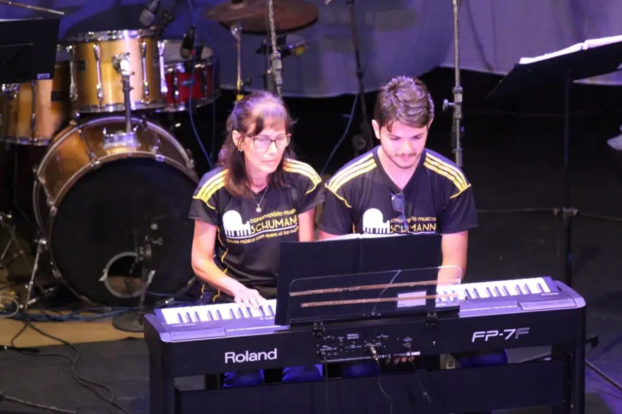
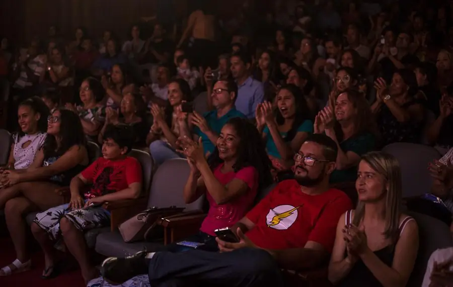
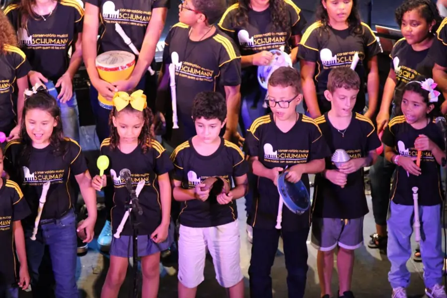
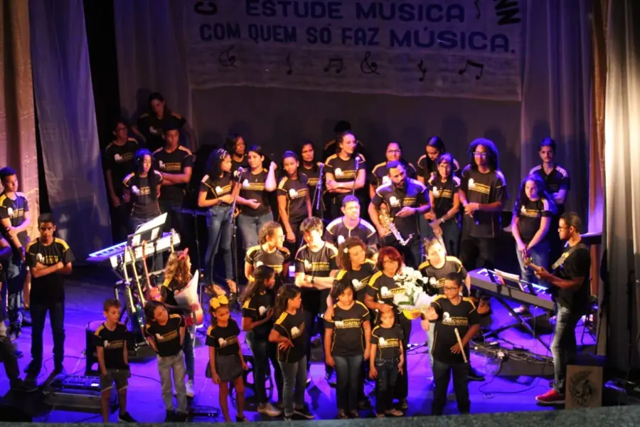
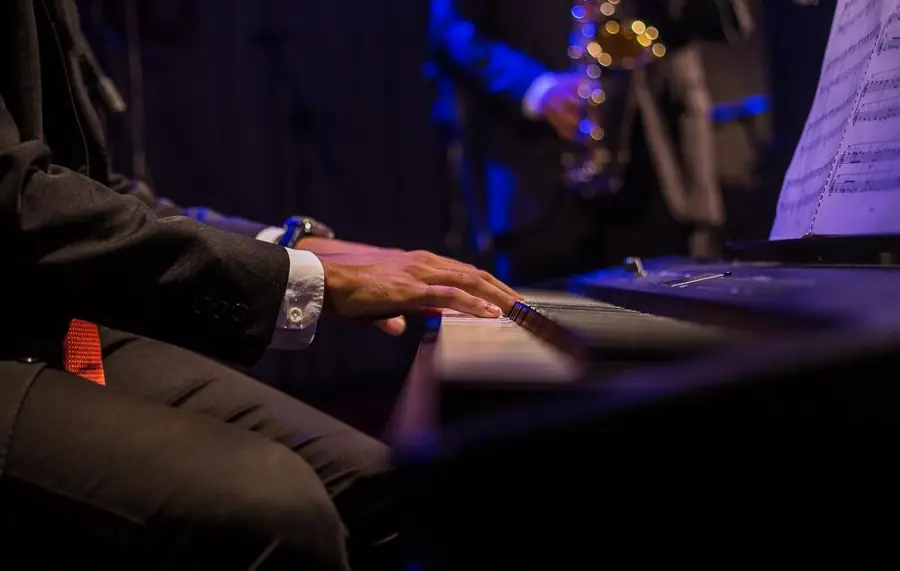
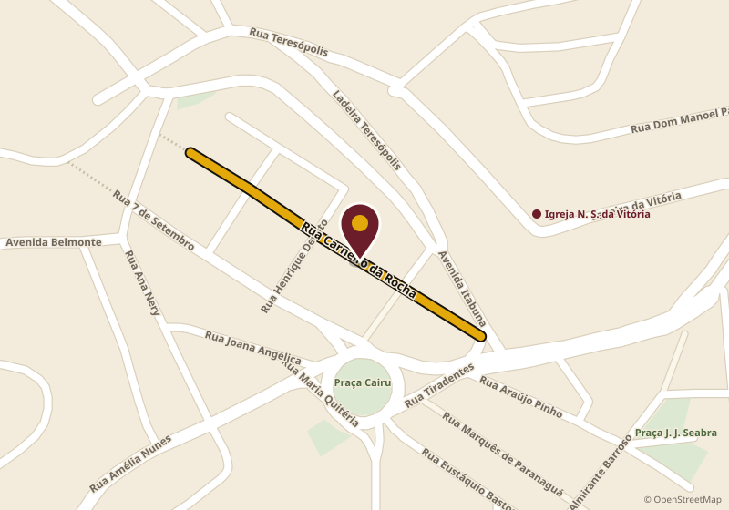
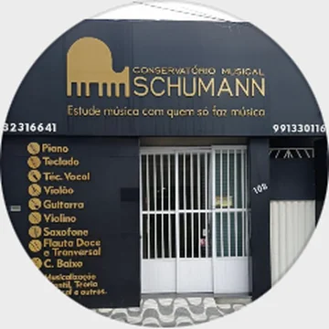

Para começar
A base para quem está chegando, inclusive os pequenos.
- Musicalização infantil
- Teoria musical
Show dos 30 anos 29 de outubro
R$ 100 R$ 50 até 20 de outubro
+ 1 kg de alimento doado ao trabalho social
Ingresso R$ 100
Comprar ingressoEm Ilhéus, música é tradição.
O show dos 30 anos
Um show de música instrumental e vocal, com professores, alunos e músicos formados pela casa.
1º lote esgotado R$ 50 + 1 kg de alimento até 20 de outubroIngresso solidárioLeve 1 kg de alimento não perecível no dia do show. Tudo o que for arrecadado vai para trabalho social.
Você fala direto com a escola: (73) 99133-0116
Nossa história
Duas professoras, uma sala e a vontade de ensinar música em Ilhéus. Trinta anos e quatro endereços depois, a escola tem casa própria no Centro.
As professoras Rute Assis e Normélia abrem a escola numa sala alugada na Rua Prado Valadares. No mesmo ano, ela se muda para o Edifício Misael Tavares, na Praça Coronel Pessoa. O nome, no começo, era Conservatório de Música Schubert.
A escola vai para o Edifício Virgílio Amorim, na Travessa 1º de Janeiro. A professora Normélia deixa a sociedade e a professora Marinalva Melo entra como sócia por mais um ano. Depois, segue como parceira da casa.
Sob a liderança da professora Rute Assis, a escola adota de vez o nome Conservatório Musical Schumann, a marca que acompanha gerações de alunos em Ilhéus.
O conservatório realiza o sonho do espaço definitivo e se muda para a Rua Carneiro da Rocha, 108, no Centro. É onde a música acontece até hoje.
Professores, alunos e músicos formados na casa sobem juntos ao palco do Centro de Convenções em A Trilha Sonora de uma Geração.
Um lugar para estudar, sonhar e realizar.Estude música com quem só faz música.
Do primeiro dia ao palco
Conhece a escola, experimenta o instrumento e a gente indica o melhor curso para a idade.
Aula de instrumento com teoria musical junto, para ler a partitura e entender o que toca.
Toca com outros alunos, aprende a ouvir o grupo e se prepara para a apresentação.
Apresentação com banda, coral e público. A família assiste da plateia.
Cursos
A base para quem está chegando, inclusive os pequenos.
Do primeiro dó à peça inteira.
Do violão ao violino.
Saxofone e flautas.
Cantar com técnica e confiança.
Arraste para o lado para ver todos.
O palco
É no palco que o aluno vê o quanto andou, e a família vê de perto.








Matrícula aberta
Valores e horários pelo WhatsApp.
Como chegar
A sede própria do conservatório fica na Rua Carneiro da Rocha, 108.

Abrir no Google Maps
Dúvidas
Pelo WhatsApp (73) 99133-0116. Diga quantos ingressos quer e a escola combina o pagamento e a entrega. O 1º lote esgotou. No 2º lote, o ingresso de R$ 100,00 sai por R$ 50,00 mais a doação de 1 kg de alimento não perecível, até 20 de outubro. Os alimentos vão para trabalho social.
Pode. O curso começa do primeiro dia, com instrumento e teoria juntos, no ritmo dele.
Os pequenos começam na musicalização infantil. Na aula experimental a gente indica o curso certo para a idade.
Pode. Os cursos são para crianças, jovens e adultos, do iniciante ao avançado.
Dependem do curso e são combinados na matrícula. Chame no WhatsApp que a secretaria passa tudo.